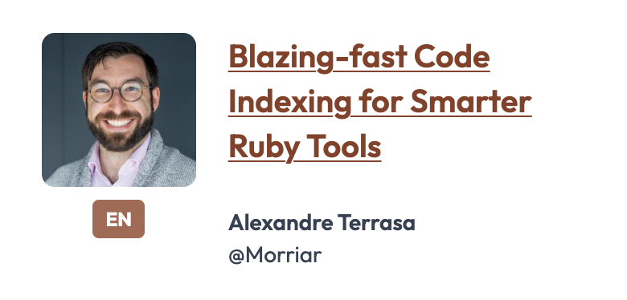
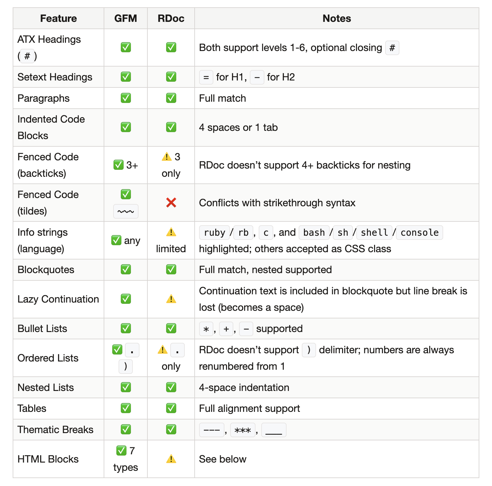
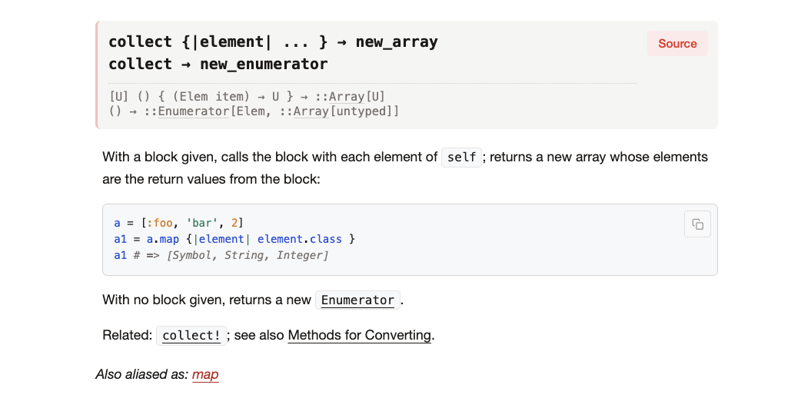

Hi everyone. Today I want to talk about the future of Ruby documentation — what we have done in the last 2 years, and what will come in the future.
About me
Ruby committer — Debug.gem, IRB, RDoc, Reline, a bit of ZJIT
Ruby DX team @Shopify — Tapioca, Ruby LSP, Rubydex
02
I'm Stan Lo. I'm a Ruby committer and I work on several Ruby tools over the years, including the debugger, IRB, RDoc, and Reline.
Last year I also spent quite some time working on ZJIT as well.
I'm part of the Ruby Developer Experience team at Shopify. We built and maintain projects like Tapioca, Ruby LSP, and a new project called Rubydex.
Rubydex
A Ruby code indexer — Shopify/rubydex
Static code intelligence for Ruby

03
Speaking of Rubydex, it's a new Ruby code indexer my team is building. It provides static code intelligence for Ruby — class and module resolution, method lookup, reference finding, and so on. It's fast and it's built to be a foundation for other tools.
My colleague Alexandre Terrasa is giving a talk about it tomorrow — please check it out.
The future of Ruby's documentation is about AI
04
OK, let me get back to my talk. I think the future of Ruby's documentation is about AI.
But RDoc isn't ready for that yet.
05
That's the direction I believe we're heading. But honestly, RDoc isn't ready for that yet.
So let me talk about what it would take to get there.
What AI needs from documentation
Clear, accurate documentation
Simpler content formats — less context overhead (currently Markdown)
Clear intent — type signatures tell it what code expects
06
AI needs a few things from documentation.
First, accuracy — AI trains on docs and builds assumptions based on them. It also grabs docs when making plans, and references them when generating code.
Second, the doc should be presented in simpler content formats — ones that don't waste context on markup noise. Right now that's Markdown, but the specific format could change.
Third, clear intent — type signatures give AI structured information about what a method expects and returns.
Live preview — see changes without regenerating everything
07
That's the content side. But AI also needs good tooling around documentation.
When an agent writes or updates docs, it needs fast feedback — so it knows if anything is missing documentation, or if the references are incorrect.
It can also use incrementally generated docs to verify changes quickly, instead of generating the whole project's documentation all over again.
All of these help human developers too.
These aren't AI requirements — they're good documentation requirements.
08
Here's the thing. Everything I just described — accurate docs, simpler formats, type signatures, fast feedback — these aren't just AI requirements.
They're what makes documentation better for everyone. Improving these things now just creates more leverage because AI amplifies the benefit.
RDoc wasn't delivering
Parser couldn't handle some newer Ruby syntax
Incomplete Markdown support
No RBS type signatures
09
RDoc has been Ruby's documentation tool for 20+ years. It kinda works. But it failed to meet most people's expectations for modern day documentation tools.
The parser couldn't handle a few newer Ruby syntax features — like endless methods — so the generated docs for those were wrong.
Markdown support was incomplete, which makes writing documentation harder for everyone.
And there was no RBS integration — both humans and AI were missing type information when reading the docs.
RDoc wasn't delivering
No live preview — regenerate and open HTML files manually
Darkfish theme: dated design, no mobile support
10
And on the tooling side, it wasn't much better. No live preview — you had to regenerate and manually open HTML files to see your changes. That's a slow feedback loop we should avoid.
And finally, the Darkfish theme was dated, without even mobile support. This gives readers an awful first impression of the language and poor reading experience.
So here's what we did.
...to make RDoc work for us, and our agents.
11
So even though we want to prepare RDoc for the age of AI, there's a long list of things we need to fix first.
Here's what changed in the past 2 years.
New theme
Before: Darkfish
12
First is the visual change. The Darkfish theme was built in 2008. And it's clearly dated for 2020.
New theme
After: Aliki
13
So I created Aliki — the new default theme shipped with Ruby 4.0. Here's the light mode. Clean layout, redesigned left sidebar, better contrast and highlight, and better navigation and search experience.
New theme
After: Aliki (dark mode)
14
It also has a dark mode, which is turned on based on your system preferences. With Aliki, we hope to give Ruby developers a good impression that matches Ruby's aesthetics.
Aliki
Dark mode with system preference detection
Responsive layout
Improved search algorithm and UI
Automatically generated ToC sidebar
Named after my cat. Ships as the default theme in Ruby 4.0.
13
The key features: dark mode that follows system preference, responsive layout, improved search algorithm and UI, and automatically generated ToC sidebar. Named after my cat. Ships as the default in Ruby 4.0.
Parser
The parser rewrite
RDoc's Ruby parser used Ripper — slower and couldn't handle modern syntax
Tomoya Ishida (@tompng) rewrote it on Prism, fixing many issues along the way
Fixed 7 long-standing bugs — some open since 2016
15
That's the new look. Now let's talk about what's under the hood. RDoc's Ruby parser was built on Ripper. It was slower than Prism and couldn't handle modern Ruby syntax. Pen-san — Tomoya Ishida — rewrote it on Prism and fixed many issues along the way, some reported many years ago.
Parser
Bug fix example: __FILE__
Source: # Returns __FILE__ as a string
Before
Returns FILE as a string
After
Returns __FILE__ as a string
Same fix for __send__, __dir__, and similar identifiers.
16
The old formatter saw underscores and assumed they meant emphasis. So __FILE__ in a doc comment became italic-bold FILE. The new parser understands these are Ruby keywords, not formatting, so can render it correct. The same fix handles __send__, __dir__, and any double-underscore identifier.
Parser
What the rewrite changed
Roughly half the code (1,243 vs 2,241 lines)
~30% faster (0.69s vs 0.97s on 112 files)
New Ruby syntax is handled by Prism — not by RDoc
16
After the rewrite, the new parser is roughly half the code — 1,243 lines versus 2,241. We benchmarked both on RDoc's own codebase — 112 Ruby files — and Prism came out about 30% faster. But the best part is the last point. When Ruby adds new syntax, Prism already knows how to parse it. We don't have to manually teach RDoc about every new feature anymore.
Parser
Bug fix example: endless methods
classFoo# open Foodefbar = 42 # open bar — where's end?end# this closes bar, not FooclassBaz; end# Ripper thinks we're still inside Foo
Ripper
class Foo
— method bar
— class Baz← wrong
Prism
class Foo
— method bar
class Baz
17
Here's one example: The old Ripper parser works on tokens — it tracks where methods end by looking for the end keyword.
But after endless methods were introduced, they broke that assumption. So in this example, the Ripper-based parser would incorrectly consume the end keyword of the Foo class, and cause the Baz class to be considered nested inside Foo.
With Prism, the parser already knows how to handle method and class boundaries. So RDoc can easily know there's just one method inside the Foo class. And Baz is outside of its scope.
Markdown
Markdown in RDoc
RDoc has supported Markdown since 2011
But the parser was buggy — low compatibility with GitHub Flavored Markdown
The internal pipeline made fixes difficult
18
Next let's see the improvements around Markdown.
Markdown support in RDoc was added in 2011. But the support was incomplete and buggy — features like strikethrough, tables, and heading anchors were all half working. If you're used to using Markdown on GitHub, you'd be frustrated by RDoc's lack of support pretty quickly.
RDoc has its own markup language — and it's still the default.
19
I believe many of you don't know that RDoc has its own markup language, and it's the default instead of Markdown. And the way RDoc handles 2 markup languages makes fixing Markdown support harder.
Markdown
The coupling problem
RDoc markup parser
Markdown parser
translates to RDoc format
↓
↓
Shared InlineParser
↓
HTML output
20
The parsers for Markdown and RDoc are tightly coupled. The Markdown parser even has to translate some of its syntax into RDoc format before passing it into a shared inline parser. So fixing a Markdown bug often means changing two places, while still maintaining the behavior for RDoc markup.
This is the main reason why many seemingly small issues take a long time to address. Because the solution needs to navigate through a complex pipeline.
Markdown
Example: ~~strikethrough~~
~~text~~
→
<del>text</del>
→
InlineParser doesn't know <del>
→
Broken
Fix touches shared code → must verify RDoc markup still works too.
21
Here's a concrete example. Markdown strikethrough — tilde-tilde-text — the parser outputs it as a del HTML string. That string goes to the shared InlineParser, which didn't recognize del. So strikethrough was silently broken for years. Fixing it means modifying the shared InlineParser, then verifying RDoc markup still works too.
Markdown
Bash syntax highlighting
Before
geminstall rdocrdoc--servercurllocalhost:4000
Language tag ignored — highlighted as Ruby
After
geminstall rdocrdoc--servercurllocalhost:4000
Recognized as bash — commands in blue, options in cyan
23
Before, the language tag on fenced code blocks was completely ignored. Everything was passed through the Ruby highlighter. So bash commands like gem install got colored as Ruby identifiers, and --server became a Ruby operator. Now the language tag is respected — bash, c, sh, shell, and console are all recognized.
Important for Ruby's C extension documentation on docs.ruby-lang.org.
22
C syntax highlighting matters because a large part of Ruby's core API is implemented in C. On docs.ruby-lang.org, method source is shown inline — and before this change, C code had no highlighting at all. Now keywords, types, and function names are colored.
Markdown
Inline styling in tables
Before
Name
Type
age
'Integer`
Backtick code broken in table cells
After
Name
Type
age
Integer
Backticks, links, bold, italic now work in cells
23
Markdown in table cells was broken — backtick code, links, bold, italic didn't render. This was fixed in PR #1386. Now table cells support the same inline styling as regular paragraphs.
Markdown
GFM compatibility
Feature
GFM
RDoc now
v6.11.0 (Jan 2025)
Headings, paragraphs, lists
✅
✅
✅
Fenced code + language highlight
✅
✅
⚠️
Strikethrough
✅
✅
❌
Table inline styling
✅
✅
❌
GitHub-style heading anchors
✅
✅
❌
Ordered lists, nested lists
✅
⚠️
⚠️
Tilde fences, backslash breaks
✅
❌
❌
Slowly ticking up. Tracked with a GFM spec comparison test suite.
21
Despite the coupling problem, we've been making progress. This table shows what we've improved since the last release — v6.11.0 from January 2025.
The bold items in the "RDoc now" column are things we fixed. Fenced code highlighting, strikethrough, table inline styling, heading anchors — all working now.
We're not at full GFM compatibility yet, but we're tracking it systematically.
Markdown
Tracking GFM compatibility

22
We also added official documentation that tracks exactly where RDoc's Markdown support stands compared to GFM. So if you want to know what you can and can't do, it's all documented now. And contributions for Markdown are obviously welcome.
Type signatures
RBS type signatures
Inline #: annotations — type info lives next to the code
sig/ directory — .rbs files, including stdlib declarations
Displayed in HTML and ri, with linked type names
23
Now let's talk about type signatures. RDoc now extracts RBS type information from two sources — inline annotations in your Ruby files, and .rbs files in your sig/ directory. It validates them, and displays them in both the HTML output and ri.
Type signatures
RBS in HTML output

24
Here's what it looks like in Aliki. The type signature shows up under the existing call signatures. You can see the parameter types and return type at a glance. When the types match existing classes, they'll become links to the class's page as well.
Server mode
rdoc --server
25
That covers the content improvements. Now let's talk about tooling.
The server mode will dramatically increase developers' productivity when it comes to document editing. You edit a file, the browser refreshes automatically to show you the latest changes.
[Click to play the demo.]
Server mode
rdoc --server
Changes reflected in browser automatically
Zero external dependencies — uses Ruby's TCPServer
Incremental re-parsing — shorter response, not instant (yet)
make html-server — contributing to Ruby docs has become easier
26
The server mode has zero external dependencies — it uses Ruby's built-in TCPServer. It has a background watcher monitoring files and only re-parses the ones that changed. The latency is between 100 to 200 milliseconds right now. With future improvements on parsing and rendering performance, I hope we can make it feel instant someday.
And I integrated this into Ruby itself — so now you can preview core documentation the same way. This lowers the barrier to contribute to Ruby's documentation.
Coming in RDoc 8.0
Prism parser (default)
More Markdown improvements
RBS type signatures in HTML and ri
Server mode
27
So, everything I just showed you — except Aliki, which already shipped — the Prism parser, many Markdown fixes, RBS type signatures, server mode — all of this is coming in RDoc 8.0. That's the next major release.
So how does RDoc fit into the AI future?
28
That's the foundation we've rebuilt. Now let's come back to the question from the beginning — how does RDoc fit into the AI future?
Contributing
RDoc's priority
Better contributing experience
Target: Ruby's official docs and gem docs
Make documentation easier to write and maintain
29
For me, the priority is clear — make it easier to contribute to Ruby documentation. That means both docs.ruby-lang.org and gem documentation. Lower the barriers for writing, reviewing, and maintaining docs.
Whether users adopt a type checker is their choice — RDoc supports both
30
RBS signatures are a start — structured, machine-readable contracts in the source. We'll revisit supported directives to make them clearer. And I want to be explicit: whether users adopt a type checker is their choice. RDoc will support both typed and untyped codebases.
Contributing
Fully migrate to Markdown
Automatic RDoc markup → Markdown translation
Migrate Ruby core's documentation to Markdown
Change RDoc's default markup to Markdown
This will take a while. Hopefully with AI tools, not years.
30
The long-term goal is to fully migrate to Markdown. That means building an automatic translator from RDoc markup to Markdown, migrating Ruby core's documentation — which is massive — and eventually making Markdown the default. This is a lot of work. But with AI-assisted tooling, I'm hoping we can get there faster than it would have taken a few years ago.
AI skills
An RDoc skill for AI agents
Setting up RDoc in a project
Writing RBS type signatures
Writing documentation — server mode, coverage checks, directives
AI writes the docs. You review them.
31
Now, another thing I've been thinking about — how can AI help us write better and more documentation? Imagine installing an RDoc skill for your AI agent, and it just knows how to set up RDoc in your project, how to write RBS signatures, all the directives, uses server mode for previewing, runs coverage checks. You just review the result.
AI skills
What I'd like to see for Ruby
ruby/ruby-skills
Registry
→
ruby/rdoc → RDoc skill
ruby/irb → IRB skill
ruby/bundler → Bundler skill
Third-party skills (with criteria)
Each project maintains its own skill. The registry curates and points to them.
32
Let me take a quick detour and talk about what AI skills for Ruby could look like. I'd like to see a central skill registry — ruby/ruby-skills — that curates skills for the Ruby ecosystem. Each project maintains its own skill in its own repo. The registry just points to them. Third-party skills could be included too, with clear quality criteria. This way, skills can be maintained and evolved along with the tools.
AI skills
Reality: there's no standard for distribution
Only Claude Code has a skill distribution system today
We need a good solution that works across agent harnesses
We'll work on an RDoc skill after 8.0 ships.
33
But as of now, there's no standard for distributing skills. Right now, only Claude Code has a plugin system for installing and updating skills similar to what I described.
Every other tool either has only a same-repository plugin registry or less mature plugin systems.
Before we ship an RDoc skill, and any other Ruby-related skills, we need to figure out a distribution approach that works across agent harnesses, not just one. We'll tackle this after 8.0 ships.
Contributing
Better tools for writing docs
For humans: rdoc --server (live preview)
For AI agents: rdoc -C (coverage — what's missing)
For AI agents: ri --format=markdown (query docs directly)
34
For humans, server mode gives you live preview while writing. For AI agents, rdoc -C gives coverage reports — what's undocumented, what has broken references. And ri --format=markdown lets agents query Ruby documentation directly in a format they're fluent in.
LLM-ready docs
For AI doc consumption: we evaluated and found nothing proven yet
34
OK, back to documentation specifically. The other question is — can we make the docs themselves more consumable by AI? We looked at what's out there, but we haven't found a concrete path forward yet. Let me show you a few community examples.
LLM-ready docs
Rust: proposed twice, rejected twice
2024: RFC #3751 — LLM-friendly text output for Rustdoc
2026: cargo #16720 — Markdown output from cargo doc
Both rejected: "Output to JSON format is enough for now. This should be an external tool"
¹ rust-lang/rfcs#3751 ² rust-lang/cargo#16720
35
Let's start with Rust. There have been two proposals — one in 2024 for Rustdoc, another this March for Cargo — both asking for Markdown or LLM-friendly output. Both got rejected for the same reasons.
The maintainers think the AI space is moving too fast — a new output format could become obsolete the moment a new standard shows up. And Rustdoc already supports JSON output, so the community can build whatever format they need as a plugin.
Elixir went the other way. ExDoc 0.40.0 shipped a Markdown formatter and llms.txt generation — both enabled by default. So now every Elixir project gets them out of the box. As far as I know, they're the first major doc tool to actually ship this.
LLM-ready docs
We prototyped llms.txt
The most complete standard for LLM-friendly docs
~10% adoption across 300K domains, zero measurable impact on AI citations ¹
Only 0.1% of AI bot traffic touches llms.txt files ²
Google: "No AI system currently uses llms.txt" ²
¹ SE Ranking (seranking.com/blog/llms-txt) ² Kai Spriestersbach, "The llms.txt is Dead" (2026)
37
I also prototyped llms.txt generation for RDoc. Before opening the PR, I looked for evidence that it actually works. The data wasn't encouraging.
First, there's no paper around this that I can find. So I can only source from company and personal blog posts.
SE Ranking studied 300,000 domains — about 10% adopted it, zero measurable impact on AI citations. Another study found only 0.1% of AI bot traffic even touches llms.txt files. And Google's John Mueller said it directly — no AI system currently uses llms.txt.
So we decided — not worth it right now.
LLM-ready docs
RDoc: JSON output as the middle ground
Ship a stable JSON output format — like Rustdoc's approach
Community builds whatever consumption format they need
RDoc doesn't chase a moving target
38
So some communities are more adventurous, but most haven't prioritized documentation consumption for AI yet.
Looking at all of this, I think the middle ground for RDoc is JSON output. Same conclusion the Rust community reached — ship a stable, structured format and let the community build whatever consumption tools they need on top.
That way RDoc doesn't have to chase a moving target. If someone needs Markdown output, llms.txt, or whatever comes next — they can build it from the JSON.
We're not there yet, but I think that's the direction.
Summary
What makes docs useful to AI is what makes them useful to developers
RDoc 8.0 ships the fixes — parser, Markdown, RBS, server mode
Next: Markdown migration, AI skills, JSON output for consumption
39
OK, let me wrap up with three things.
One — what makes documentation useful to AI is exactly what makes it useful to developers. Accuracy, simpler formats, type signatures, good tooling.
Two — RDoc 8.0 ships the fixes. Prism parser, Markdown improvements, RBS type signatures, server mode.
Three — what's next. Full Markdown migration, AI skills for contributing, and on the consumption side — JSON output as the stable foundation.
Thank you!
tompng (Tomoya Ishida), the Shopify Ruby DX team, and the Ruby committers who reviewed all those PRs
GitHub: @st0012BlueSky: @st0012.dev
40
Thank you. A big thank you to tompng — Tomoya Ishida — for the subsystem rewrites that made everything else possible. The Shopify Ruby DX team for all the ideas and support. And the Ruby committers who reviewed so many PRs. I'll be around if you have questions.
1Password menu is available. Press down arrow to select.
1Password menu is available. Press down arrow to select.
1Password menu is available. Press down arrow to select.
1Password menu is available. Press down arrow to select.
1Password menu is available. Press down arrow to select.
1Password menu is available. Press down arrow to select.
1Password menu is available. Press down arrow to select.
1Password menu is available. Press down arrow to select.
1Password menu is available. Press down arrow to select.
1Password menu is available. Press down arrow to select.
1Password menu is available. Press down arrow to select.
1Password menu is available. Press down arrow to select.
1Password menu is available. Press down arrow to select.
1Password menu is available. Press down arrow to select.
1Password menu is available. Press down arrow to select.
1Password menu is available. Press down arrow to select.
1Password menu is available. Press down arrow to select.
1Password menu is available. Press down arrow to select.
1Password menu is available. Press down arrow to select.
1Password menu is available. Press down arrow to select.
1Password menu is available. Press down arrow to select.
1Password menu is available. Press down arrow to select.
1Password menu is available. Press down arrow to select.
1Password menu is available. Press down arrow to select.
1Password menu is available. Press down arrow to select.
1Password menu is available. Press down arrow to select.
1Password menu is available. Press down arrow to select.
1Password menu is available. Press down arrow to select.
1Password menu is available. Press down arrow to select.
1Password menu is available. Press down arrow to select.
1Password menu is available. Press down arrow to select.
1Password menu is available. Press down arrow to select.
1Password menu is available. Press down arrow to select.
1Password menu is available. Press down arrow to select.
1Password menu is available. Press down arrow to select.
1Password menu is available. Press down arrow to select.
1Password menu is available. Press down arrow to select.